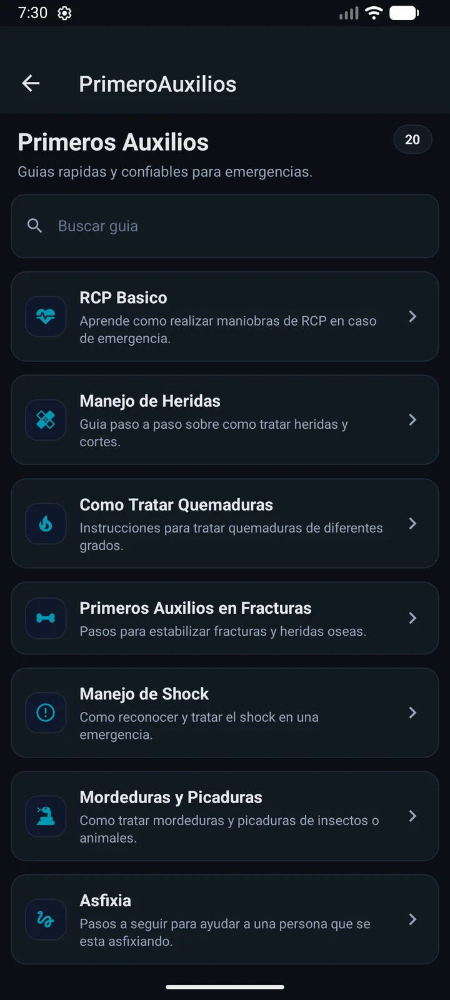

Farmacia de turno al instante, en 5 ciudades bonaerenses.
Sin buscar en grupos de WhatsApp ni llamar para confirmar. Elegí tu ciudad y ya sabés cuál farmacia está de turno ahora.

Guía rápida
Cómo funciona
Gratis, sin registro
Para Android, iPhone o directo desde la web. Abrís y ya está, no hay que crear cuenta.

Datos de tu localidad
Seleccioná dónde estás y accedés al instante a la información cargada por la administración local.

Turno, dirección y teléfono
Todo actualizado: quién está de turno ahora, hasta qué hora, y cómo llegar en un toque.
Lo que incluye
Funciones clave
Así se ve en la app, ahora
Farmacia Speroni
De turno · abierta hasta las 08:00
Turnos y próxima guardia con un vistazo, sin llamar ni buscar en grupos de WhatsApp.
-
Emergencias y avisos
Información prioritaria para urgencias, cortes y alertas importantes.
-
Locales y servicios
Listado de locales útiles con datos de contacto verificados.
-
Widget en pantalla
Mirá la farmacia activa desde la pantalla de inicio sin abrir la app.
-
Notificaciones push
Recibí avisos de cambios de turno y novedades de tu ciudad al instante.
Cobertura
Ciudades disponibles
BenFarma está activo en estas ciudades. Más se suman continuamente.
La app en acción
Capturas de pantalla

Disponible ahora
Descargá BenFarma
Gratuito. Sin publicidad molesta. Siempre actualizado. Para Android, iPhone o desde cualquier navegador.
Preguntas frecuentes
FAQ
¿La app es gratuita?
Sí, BenFarma es completamente gratuita.
¿En qué ciudades funciona?
Activo en Dolores, Chascomús y Las Flores (Buenos Aires). Próximamente en Las Armas y General Guido. Más ciudades se incorporan progresivamente.
¿Cómo envío una sugerencia?
Desde la app podés enviar sugerencias o escribir a benfarmaar@gmail.com.
¿Cómo elimino mi cuenta?
Podés iniciar el proceso desde la app o en la página de eliminación de cuenta.
¿La información es oficial?
Sí. Los datos de turnos y avisos son cargados por la administración local de cada ciudad.